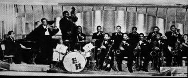

Эвери Пэриш (Every Parish) родился 24 января 1917 года в Бирмингеме, штат Алабама. Как пианист, он работал в шоу-бизнесе всего 7 лет, от своего 17-летия до 24-летия. Однако остался в истории джаза и блюза.
Он закончил государственный учительский колледж штата Алабама (Alabama State Teachers College), на его курсе сложился оркестр 'Bama Street Collegians. На профессиональной сцене студенты взяли название Erskine Hawkins Big Band. Под руководством блестящего франта и посредственного трубача и умелого организатора Хокинса оркестр не вышел в ряд звезд высшего полета, однако пользовался большой популярностью и в расцвет эпохи биг-бэндов никогда на отсутствие работы пожаловаться не мог. Три пластинки (78 об/мин.), записанных оркестром, стали хитами. Среди них пьеса "After Hours" (1940), сочинения юного пианиста Пэриша.
Пьеса была записана для чикагского лейбла Bluebird и не только стала популярной, но и получила высшую оценку у профессионалов. В те годы каждый джазовый пианист, претендовавший на звание настоящего профессионала, должен был доказать это, сыграв After Hours не хуже Пэриша.
В 1941 году Пэриш уехал в Калифорнию, найдя новое место работы. Еще через год ввязался в драку в баре, которая закончилась для него плачевно: он оказался наполовину парализованным и более не мог выступать профессионально. Ему было 24 года. Он прожил еще 18 лет, работая где придется, только не на эстраде, и умер в Нью-Йорке 1 декабря 1959 года при загадочных обстоятельствах.
Перечислить всех знаменитых музыкантов, исполнявших его единственную знаменитую тему, невозможно. Но лишь малую часть из джаза, блюза, даба, рока и поп-музыки: Dizzy Gillespie, Woody Herman, Benny Goodman, Quincy Jones, Oscar Peterson, Aretha Franklin, Ray Charles, Dinah Washington, Sarah Vaughan, Tommy Tucker, Earl Hooker, Ike Turner, Robert Lockwood Jr., Pinetop Perkins, Professor Longhair, Joe Sample, тройка знаменитый органистов: Gene Harris, Jimmy Smith, Jack McDuff, гитарист-реформатор Roy Buchanon, the Velvet Underground, Boz Scaggs, Spyro Gyra и даже сам Muddy Waters. Среди блюзменов новейший (пока) вариант в 2006 году записали (каждый на своем альбоме) Ike Turner и Walter Trout.
А.Евдокимов (ВЭБ'2008)